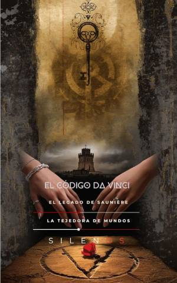

Illuminati
EL CÓDIGO DA VINCI : El Legado de Saunière
Sinopsis
¿Es posible que la historia oficial sea solo una capa superficial que oculta una verdad mucho más profunda? El Código Da Vinci: El Legado de Saunière invita al lector a un viaje intelectual y simbólico a través de los laberintos de la historia, el arte y el poder. Esta obra trasciende la narrativa convencional para analizar el impacto de uno de los mayores fenómenos culturales de nuestro tiempo. Desde el misterioso párroco Jacques Saunière en Rennes-le-Château hasta la trama de los reyes merovingios, este libro desentierra los hilos invisibles que conectan las sociedades secretas con la construcción del relato histórico moderno. Lo que descubrirás en estas páginas: El Símbolo en la Vitrina: Un análisis profundo del nacimiento del icono y el lenguaje de los símbolos, desde la "V" que se desdobla hasta la curiosidad intelectual de Robert Langdon. Los Pergaminos de Rennes: El enigma de Rennes-le-Château y los secretos ocultos en la sacristía que desafiaron a instituciones centenarias. La Trama Merovingia: La búsqueda del linaje de los reyes perdidos y el papel de Sophie Neveu en el archivo de la memoria y el Priorato de Sión. El Palimpsesto del Poder: Una mirada crítica a cómo el establishment controla el relato oficial y utiliza la "ocultura" como herramienta de mercado. La Gran Obra: El tránsito de la conspiración a la transparencia, proponiendo la razón como un servicio compartido para la justicia. ¿Por qué leer esta obra? Este libro no es solo una exploración del misterio; es una herramienta para aprender a leer los símbolos de nuestra cultura. A través de conceptos como la geometría de la verdad y la espiral áurea, se propone un nuevo camino donde el conocimiento no pertenece a unos pocos en las sombras, sino que se democratiza para transformar la realidad. Atrévete a mirar detrás del velo. Descubre el legado que el tiempo y el silencio no pudieron borrar.